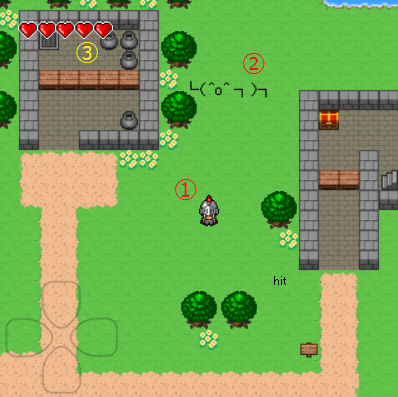

アクションＲＰＧ的なゲームを作る班 作品紹介ページ
今回私たちの班はenchant.jsを利用したアクションＲＰＧ的なゲームを作成いたしました。
このサイトでは作品の紹介をいたします。
すべてキーボードで操作します。
・ アローキーの ↑ で上下左右に移動。斜め移動にも対応しています。
←↓→
・ Ｚキーで近接攻撃を繰り出します。

① 主人公、このキャラを操作します。
② 敵キャラ、いいフォルムですね(*´ω｀*)
現在はランダムに動くだけのキャラですが、当たり判定は実装しています。
③ 主人公のＨＰです。これがなくなると主人公はやられてしまいます。
作成途中なのでゲームオーバーなどは実装されておりません。
詳しくはGitHubページのReadmeをお読みください。
以下蛇足
行進する┌（┌ ＾o＾）┐ｶﾓｫ…